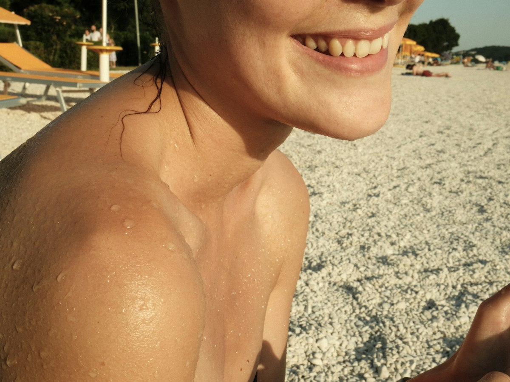

Antes de decidir
Criolipólisis o liposucción:
cuál es la indicada para ti
Grasa localizada en una sola zona o un cambio que ya no cabe en una sesión: así se diferencian.
Haces dieta, vas al gimnasio, y ese rollito en la cintura o la papada sigue ahí. Te preguntas si te alcanza con una sesión de criolipólisis o si lo tuyo ya es un caso para liposucción. No hay una sola respuesta: depende de cuánta grasa hay, en cuántas zonas, y de qué tan dispuesta estás a pasar por un quirófano.
Qué hace cada una
La criolipólisis no es cirugía. Un aplicador enfría de forma controlada la grasa de una zona puntual (abdomen, cintura, espalda, papada, brazos, muslos o rodillas) y, en las semanas siguientes, el cuerpo retira esas células de forma natural. La piel y el músculo quedan protegidos. Se empieza a notar desde la semana 3 y el resultado completo llega entre la semana 8 y la 12. No hay incapacidad: sales de la sesión y sigues con tu día.
La liposucción sí es cirugía, en Medellín siempre en quirófano. Dura entre 2 y 5 horas según cuántas zonas se tratan, con anestesia general o raquídea. No es algo que se decide por catálogo ni se resuelve en una tarde: el tiempo de incapacidad depende de las zonas operadas, y lo confirma tu cirujano en la valoración.
Grasa puntual o varias zonas a la vez
La criolipólisis está pensada para una bolsa de grasa localizada: la que se pellizca con la mano y no cede con dieta ni ejercicio. Si lo tuyo es un rollito concreto en una o dos zonas, puede bastar con eso.
La liposucción entra cuando hay más volumen, varias zonas a la vez, o cuando ya se busca un cambio de contorno más marcado que una sesión de frío no va a dar. Según la ASPS, la mejor candidata a liposucción tiene la piel firme y elástica: la cirugía retira grasa, pero no tensa piel suelta. Ese mismo límite aplica, con el frío, a la criolipólisis. Ninguna de las dos corrige la piel que ya perdió firmeza.
Lo que ninguna de las dos hace
Ni la criolipólisis ni la liposucción son un método para bajar de peso. La FDA es clara en eso: el contorno corporal sin cirugía no trata la obesidad ni da los beneficios de salud de bajar de peso. Si tu meta es bajar kilos en la báscula, el camino es otro, no un tratamiento de contorno.
Tampoco reemplazan los hábitos de después. Las células de grasa que se eliminan no vuelven. Las que quedan sí pueden crecer si subes de peso. El resultado se cuida, no se olvida.
Cuándo una no es para ti
La criolipólisis no se recomienda en embarazo o lactancia, en personas con enfermedades que reaccionan al frío (como la urticaria por frío), con hernias en la zona o con problemas de circulación ahí mismo. Muy rara vez la grasa tratada reacciona al revés y aumenta en lugar de reducirse; si pasa, tiene manejo médico.
La liposucción tiene su propia lista de candidatas y de riesgos, y se decide con exámenes previos, no con lo que le funcionó a una amiga o lo que viste en un video. Las dos se indican y se controlan con un profesional.
Qué significa esto para tu semana
Si trabajas y lo tuyo es un rollito puntual, la criolipólisis no te quita un solo día de incapacidad. Si lo que necesitas es una cirugía, sí hay que planear la incapacidad con tu empleador y quién te acompaña los primeros días, aunque vivas a quince minutos de la clínica.
No te vamos a vender una sesión de frío como reemplazo de una cirugía cuando lo que sobra es mucho más que grasa localizada. No te va a dejar satisfecha, y tampoco es justo con tu tiempo. La decisión no la toma el tratamiento que más se ve en redes. La toma tu caso.
Si no tienes claro cuál es el tuyo, en la valoración con la médica estética o el cirujano plástico se revisa la zona y tu historia, y de ahí sale el plan, por escrito. Si lo tuyo termina siendo una cirugía, revisa también cómo elegir a quien te va a operar, o entra a ver cómo es la liposucción paso a paso.
Procedimientos de esta guía
Esta guía es informativa y no reemplaza una valoración médica. La indicación, los tiempos de recuperación y la fecha de regreso los define tu especialista en persona. Todo procedimiento tiene riesgos y los resultados varían de una persona a otra.
Preguntas frecuentes
Preguntas frecuentes
¿Duele la criolipólisis?
Los primeros minutos se siente frío intenso y algo de presión; luego la zona se adormece. La mayoría lo describe como tolerable, y al retirar el aplicador puede quedar un hormigueo que pasa en pocos minutos.
¿Cuántas sesiones de criolipólisis necesito?
Depende de la zona y de cuánta grasa haya ahí. Muchas personas necesitan entre 1 y 3 sesiones por zona, separadas de 6 a 8 semanas. En tu valoración te dicen cuántas y por qué.
¿La liposucción sirve para bajar de peso?
No. Ni la liposucción ni la criolipólisis son un método para bajar de peso: moldean el contorno de una zona, no cambian lo que marca la báscula. Funcionan mejor con un peso ya estable.
¿Puedo combinar criolipólisis y liposucción?
Esa decisión la toma tu médica estética o tu cirujano plástico en la valoración, según la zona y tu caso. No se define de antemano por lo que viste en redes.
¿Qué pasa si además de grasa tengo piel floja?
Según la ASPS, la liposucción no tensa la piel suelta. La criolipólisis tampoco corrige flacidez. Si ese es tu caso, se evalúa aparte con el cirujano plástico.
¿Cuántos días de incapacidad da cada una?
La criolipólisis no da incapacidad: sigues tu día después de la sesión. La de la liposucción depende de las zonas operadas y te la confirma tu cirujano en la valoración.
Blog
Sigue leyendo.
 Mini abdominoplastia o abdominoplastia completa: la diferencia está en cuánta piel sobraUna trata solo la parte baja del abdomen. La otra sube hasta el ombligo y repara los músculos. No es una preferencia: es un examen.Leer
Mini abdominoplastia o abdominoplastia completa: la diferencia está en cuánta piel sobraUna trata solo la parte baja del abdomen. La otra sube hasta el ombligo y repara los músculos. No es una preferencia: es un examen.Leer
Melasma: por qué aparece y cómo se controlaNo es una mancha cualquiera, y por eso no se trata con la primera crema que recomiendan en redes.Leernoon Clinic
Tu valoración
Todo empieza con una conversación con nuestros especialistas.
Te respondemos en minutos por WhatsApp, en horario de atención. Resolvemos tus dudas y agendamos tu valoración presencial; por WhatsApp no diagnosticamos. Por qué noon